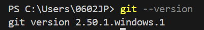

| 科目 | WEB演習 |
|---|---|
| タグ | GitHub, VSCode, CSS |
| 作成日時 | 2025年8月6日 0:09 |
| 昼食 | 自炊+中食 |
git --versiongit config --global user.name "あなたの名前"
git config --global user.email "あなたのメールアドレス"git config --global --listリポジトリクローン完了 🎉
git remote add origin https://github.com/your-username/your-repo.gitGitHubにプッシュして反映 🎉